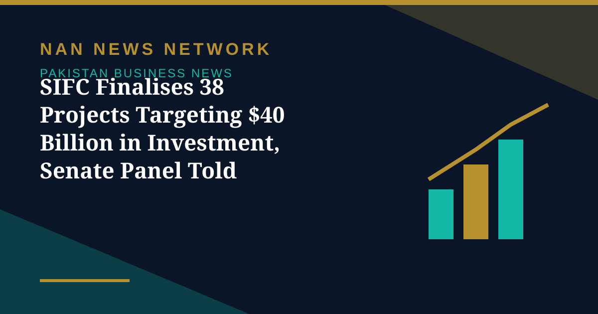

SIFC Finalises 38 Projects Targeting $40 Billion in Investment, Senate Panel Told

The Special Investment Facilitation Council (SIFC) has finalised around 38 projects across major sectors of Pakistan's economy, with an estimated investment potential of $40 billion, officials informed the Senate Standing Committee on Cabinet Secretariat on Thursday, according to Profit by Pakistan Today.
Where the projects sit
The projects cover mining, industry, railways, roads, maritime affairs, power, information technology, pharmaceuticals, healthcare, tourism and food security, as the government seeks to attract foreign investment and address regulatory obstacles affecting businesses. The committee was also informed that the Brownfield Refinery Policy had been approved, with five refineries signing implementation agreements involving proposed investments of approximately $6 billion.
Who the council is courting
SIFC officials briefed lawmakers on engagement with Chinese companies and prospective investors from Qatar and Kuwait, alongside measures aimed at simplifying regulatory approvals, facilitating visas and introducing single-window services for investors.
The caveats lawmakers raised
The committee, chaired by Senator Rana Mehmoodul Hassan, raised concerns over high business costs, regulatory hurdles and profit repatriation. Senator Abdul Qadir pointed to Pakistan's higher business costs compared with regional economies, particularly electricity prices and financing expenses. Officials also cautioned that disruptions to trade and business arising from the regional situation, including the US-Iran conflict, had made it difficult to provide reliable investment projections and final figures at this stage.
The $40 billion figure is therefore best read as an estimated potential across the project pipeline rather than committed funding, with final outcomes depending on investor decisions and regional stability.
Sources: Profit by Pakistan Today, October 30, 2026.
More on Pakistan Business News
- Pakistan's Exports Rise 7.7% to $8.5 Billion but Trade Gap Widens in First Quarter
- PSX Extends Recovery as KSE-100 Closes Above 167,000 on October 29
- Petrol, Diesel Prices Rise From October 29 as Government Revises Fuel Rates
- KSE-100 Gains 1,269 Points to Close Above 165,700
- Fauji Fertilizer's Nine-Month Profit Hits Rs71 Billion on Strong Urea Demand
- KSE-100 Climbs 1,428 Points to Close at 164,467 in Bullish Session
- Pakistan Signs $2.25 Billion Deal for Lithium Battery Gigafactory in Rawalpindi
- Gold Prices Rise by Rs1,400 per Tola in Pakistan on Monday
- Business Confidence Falls to 48 in October, State Bank Survey Shows
- Diesel Raised to Rs393.66 a Litre, Petrol Unchanged at Rs377.71
- FBR Activates Faceless Tax Audit System From October 15
- Pakistan-Iran Trade Disruption Puts $2.8 Billion Annual Trade at Stake